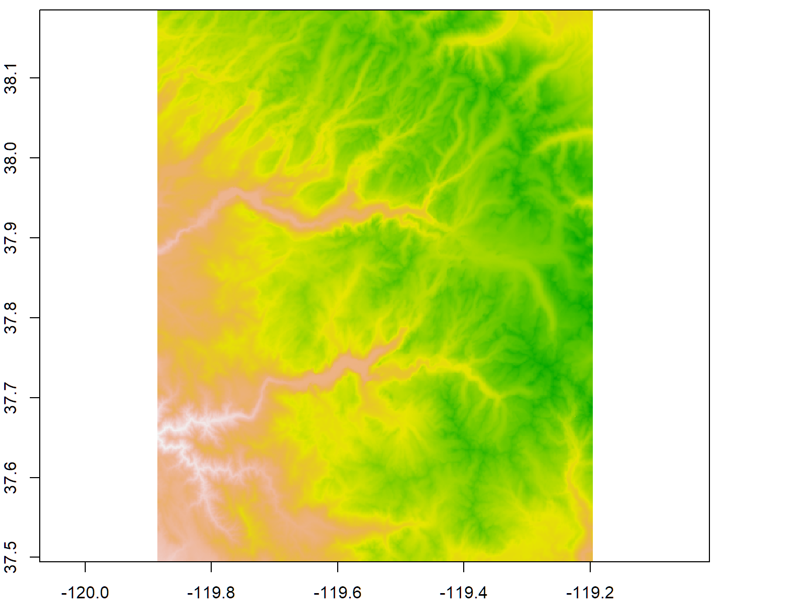

Spatial Data Analysis with R
SCGIS Conference, 2019
Raster Data Pt 1: Importing and Basic Plotting
Raster Data Sources
Remotely Sensed Data
- satellite sensors
- airborne or UAV mounted
- DEMs from radar

Derived or modeled data
- DEMs from interpolation
- interpolated environmental surfaces
- cost surfaces
- Kernel density surface (probability of occurrence)
- rasterized vector data
- many other spatial model outputs
- classified images

Multi-Band Rasters
Rasters with multiple layers are common in multi-spectral data (e.g., Landsat). Each band saves the reflectance in a different part of the electromagnetic spectrum.

Whether saved as separate RasterLayer objects, or a single multi-layered RasterStack or RasterBrick, up to three layers can be combined to produce colors when plotting.

Continuous or Discrete?
Raster data structures are simple arrays of data with a header file. The spatial structure is implicit (they are always rectangular). Cell values can be either continous or discrete.
Continous
Discrete / Categorical

Discrete rasters also have a ‘Raster Attribute Table’ (RAT), which stores the name of each category.
Continuous or Discrete?
- temperature
- land cover
- land use
- soil type
- fire risk
raster package
- read, write and manipulate gridded spatial data
- basic and high-level analysis functions
- smart processing of large files
- import data from the cloud
For details see the vignette: Introduction to the ‘raster’ package
Raster Data Types
RasterLayer - a single layer raster
RasterStack - multi-layer raster
RasterBrick - multi-layer raster (from a single file on disk, faster)
The sp package also has SpatialGrid and SpatialPixel classes. These can be easily converted to Raster* objects using the raster() or as() functions.
Rasters vs. Background Tiles
Rasters are data you can visualize and manipulate.
Tiles are background images you get from online providers for display purposes. They look nice, but what you see is what you get (no ability to manipulate).
Import a GeoTiff
Example: Import a DEM
Let’s import the 5x5° DEM tile (digital elevation model) that encompasses Yosemite. These data come from the SRTM.
The multi-purpose raster() function can be used to make a RasterLayer object from scratch, or import a raster file on disk. To import, pass the filename.
## [1] TRUE
By default, the raster package will use import functions from rgdal if it’s installed. That means it can install any file format supported by rgdal.
To see all the raster file formats supported by rgdal (and therefore raster), run gdalDrivers().
## name
## 1 AAIGrid
## 2 ACE2
## 3 ADRG
## 4 AIG
## 5 AirSAR
## 6 ARG
## 7 BAG
## 8 BIGGIF
## 9 BLX
## 10 BMP
## 11 BSB
## 12 BT
## 13 CAD
## 14 CALS
## 15 CEOS
## 16 COASP
## 17 COSAR
## 18 CPG
## 19 CTable2
## 20 CTG
## 21 DERIVED
## 22 DIMAP
## 23 DIPEx
## 24 DOQ1
## 25 DOQ2
## 26 DTED
## 27 E00GRID
## 28 ECRGTOC
## 29 EHdr
## 30 EIR
## 31 ELAS
## 32 ENVI
## 33 ERS
## 34 ESAT
## 35 FAST
## 36 FIT
## 37 FITS
## 38 FujiBAS
## 39 GenBin
## 40 GFF
## 41 GIF
## 42 GMT
## 43 GPKG
## 44 GRASSASCIIGrid
## 45 GRIB
## 46 GS7BG
## 47 GSAG
## 48 GSBG
## 49 GSC
## 50 GTiff
## 51 GTX
## 52 GXF
## 53 HDF4
## 54 HDF4Image
## 55 HDF5
## 56 HDF5Image
## 57 HF2
## 58 HFA
## 59 HTTP
## 60 IDA
## 61 ILWIS
## 62 INGR
## 63 IRIS
## 64 ISCE
## 65 ISIS2
## 66 ISIS3
## 67 JAXAPALSAR
## 68 JDEM
## 69 JP2OpenJPEG
## 70 JPEG
## 71 JPEG2000
## 72 KEA
## 73 KMLSUPEROVERLAY
## 74 KRO
## 75 L1B
## 76 LAN
## 77 LCP
## 78 Leveller
## 79 LOSLAS
## 80 MAP
## 81 MBTiles
## 82 MEM
## 83 MFF
## 84 MFF2
## 85 MRF
## 86 MSGN
## 87 NDF
## 88 netCDF
## 89 NGSGEOID
## 90 NITF
## 91 NTv2
## 92 NWT_GRC
## 93 NWT_GRD
## 94 OZI
## 95 PAux
## 96 PCIDSK
## 97 PCRaster
## 98 PDF
## 99 PDS
## 100 PLMOSAIC
## 101 PLSCENES
## 102 PNG
## 103 PNM
## 104 PostGISRaster
## 105 PRF
## 106 R
## 107 Rasterlite
## 108 RIK
## 109 RMF
## 110 ROI_PAC
## 111 RPFTOC
## 112 RRASTER
## 113 RS2
## 114 RST
## 115 SAFE
## 116 SAGA
## 117 SAR_CEOS
## 118 SDTS
## 119 SENTINEL2
## 120 SGI
## 121 SNODAS
## 122 SRP
## 123 SRTMHGT
## 124 Terragen
## 125 TIL
## 126 TSX
## 127 USGSDEM
## 128 VICAR
## 129 VRT
## 130 WCS
## 131 WEBP
## 132 WMS
## 133 WMTS
## 134 XPM
## 135 XYZ
## 136 ZMap
## long_name create
## 1 Arc/Info ASCII Grid FALSE
## 2 ACE2 FALSE
## 3 ARC Digitized Raster Graphics TRUE
## 4 Arc/Info Binary Grid FALSE
## 5 AirSAR Polarimetric Image FALSE
## 6 Azavea Raster Grid format FALSE
## 7 Bathymetry Attributed Grid FALSE
## 8 Graphics Interchange Format (.gif) FALSE
## 9 Magellan topo (.blx) FALSE
## 10 MS Windows Device Independent Bitmap TRUE
## 11 Maptech BSB Nautical Charts FALSE
## 12 VTP .bt (Binary Terrain) 1.3 Format TRUE
## 13 AutoCAD Driver FALSE
## 14 CALS (Type 1) FALSE
## 15 CEOS Image FALSE
## 16 DRDC COASP SAR Processor Raster FALSE
## 17 COSAR Annotated Binary Matrix (TerraSAR-X) FALSE
## 18 Convair PolGASP FALSE
## 19 CTable2 Datum Grid Shift TRUE
## 20 USGS LULC Composite Theme Grid FALSE
## 21 Derived datasets using VRT pixel functions FALSE
## 22 SPOT DIMAP FALSE
## 23 DIPEx FALSE
## 24 USGS DOQ (Old Style) FALSE
## 25 USGS DOQ (New Style) FALSE
## 26 DTED Elevation Raster FALSE
## 27 Arc/Info Export E00 GRID FALSE
## 28 ECRG TOC format FALSE
## 29 ESRI .hdr Labelled TRUE
## 30 Erdas Imagine Raw FALSE
## 31 ELAS TRUE
## 32 ENVI .hdr Labelled TRUE
## 33 ERMapper .ers Labelled TRUE
## 34 Envisat Image Format FALSE
## 35 EOSAT FAST Format FALSE
## 36 FIT Image FALSE
## 37 Flexible Image Transport System TRUE
## 38 Fuji BAS Scanner Image FALSE
## 39 Generic Binary (.hdr Labelled) FALSE
## 40 Ground-based SAR Applications Testbed File Format (.gff) FALSE
## 41 Graphics Interchange Format (.gif) FALSE
## 42 GMT NetCDF Grid Format FALSE
## 43 GeoPackage TRUE
## 44 GRASS ASCII Grid FALSE
## 45 GRIdded Binary (.grb) FALSE
## 46 Golden Software 7 Binary Grid (.grd) TRUE
## 47 Golden Software ASCII Grid (.grd) FALSE
## 48 Golden Software Binary Grid (.grd) TRUE
## 49 GSC Geogrid FALSE
## 50 GeoTIFF TRUE
## 51 NOAA Vertical Datum .GTX TRUE
## 52 GeoSoft Grid Exchange Format FALSE
## 53 Hierarchical Data Format Release 4 FALSE
## 54 HDF4 Dataset TRUE
## 55 Hierarchical Data Format Release 5 FALSE
## 56 HDF5 Dataset FALSE
## 57 HF2/HFZ heightfield raster FALSE
## 58 Erdas Imagine Images (.img) TRUE
## 59 HTTP Fetching Wrapper FALSE
## 60 Image Data and Analysis TRUE
## 61 ILWIS Raster Map TRUE
## 62 Intergraph Raster TRUE
## 63 IRIS data (.PPI, .CAPPi etc) FALSE
## 64 ISCE raster TRUE
## 65 USGS Astrogeology ISIS cube (Version 2) TRUE
## 66 USGS Astrogeology ISIS cube (Version 3) TRUE
## 67 JAXA PALSAR Product Reader (Level 1.1/1.5) FALSE
## 68 Japanese DEM (.mem) FALSE
## 69 JPEG-2000 driver based on OpenJPEG library FALSE
## 70 JPEG JFIF FALSE
## 71 JPEG-2000 part 1 (ISO/IEC 15444-1), based on Jasper library FALSE
## 72 KEA Image Format (.kea) TRUE
## 73 Kml Super Overlay FALSE
## 74 KOLOR Raw TRUE
## 75 NOAA Polar Orbiter Level 1b Data Set FALSE
## 76 Erdas .LAN/.GIS TRUE
## 77 FARSITE v.4 Landscape File (.lcp) FALSE
## 78 Leveller heightfield TRUE
## 79 NADCON .los/.las Datum Grid Shift FALSE
## 80 OziExplorer .MAP FALSE
## 81 MBTiles TRUE
## 82 In Memory Raster TRUE
## 83 Vexcel MFF Raster TRUE
## 84 Vexcel MFF2 (HKV) Raster TRUE
## 85 Meta Raster Format TRUE
## 86 EUMETSAT Archive native (.nat) FALSE
## 87 NLAPS Data Format FALSE
## 88 Network Common Data Format TRUE
## 89 NOAA NGS Geoid Height Grids FALSE
## 90 National Imagery Transmission Format TRUE
## 91 NTv2 Datum Grid Shift TRUE
## 92 Northwood Classified Grid Format .grc/.tab FALSE
## 93 Northwood Numeric Grid Format .grd/.tab TRUE
## 94 OziExplorer Image File FALSE
## 95 PCI .aux Labelled TRUE
## 96 PCIDSK Database File TRUE
## 97 PCRaster Raster File TRUE
## 98 Geospatial PDF TRUE
## 99 NASA Planetary Data System FALSE
## 100 Planet Labs Mosaics API FALSE
## 101 Planet Labs Scenes API FALSE
## 102 Portable Network Graphics FALSE
## 103 Portable Pixmap Format (netpbm) TRUE
## 104 PostGIS Raster driver FALSE
## 105 Racurs PHOTOMOD PRF FALSE
## 106 R Object Data Store FALSE
## 107 Rasterlite FALSE
## 108 Swedish Grid RIK (.rik) FALSE
## 109 Raster Matrix Format TRUE
## 110 ROI_PAC raster TRUE
## 111 Raster Product Format TOC format FALSE
## 112 R Raster FALSE
## 113 RadarSat 2 XML Product FALSE
## 114 Idrisi Raster A.1 TRUE
## 115 Sentinel-1 SAR SAFE Product FALSE
## 116 SAGA GIS Binary Grid (.sdat) TRUE
## 117 CEOS SAR Image FALSE
## 118 SDTS Raster FALSE
## 119 Sentinel 2 FALSE
## 120 SGI Image File Format 1.0 TRUE
## 121 Snow Data Assimilation System FALSE
## 122 Standard Raster Product (ASRP/USRP) FALSE
## 123 SRTMHGT File Format FALSE
## 124 Terragen heightfield TRUE
## 125 EarthWatch .TIL FALSE
## 126 TerraSAR-X Product FALSE
## 127 USGS Optional ASCII DEM (and CDED) FALSE
## 128 MIPL VICAR file FALSE
## 129 Virtual Raster TRUE
## 130 OGC Web Coverage Service FALSE
## 131 WEBP FALSE
## 132 OGC Web Map Service FALSE
## 133 OGC Web Mab Tile Service FALSE
## 134 X11 PixMap Format FALSE
## 135 ASCII Gridded XYZ FALSE
## 136 ZMap Plus Grid FALSE
## copy isRaster
## 1 TRUE TRUE
## 2 FALSE TRUE
## 3 FALSE TRUE
## 4 FALSE TRUE
## 5 FALSE TRUE
## 6 TRUE TRUE
## 7 FALSE TRUE
## 8 FALSE TRUE
## 9 TRUE TRUE
## 10 FALSE TRUE
## 11 FALSE TRUE
## 12 FALSE TRUE
## 13 FALSE TRUE
## 14 TRUE TRUE
## 15 FALSE TRUE
## 16 FALSE TRUE
## 17 FALSE TRUE
## 18 FALSE TRUE
## 19 FALSE TRUE
## 20 FALSE TRUE
## 21 FALSE TRUE
## 22 FALSE TRUE
## 23 FALSE TRUE
## 24 FALSE TRUE
## 25 FALSE TRUE
## 26 TRUE TRUE
## 27 FALSE TRUE
## 28 FALSE TRUE
## 29 TRUE TRUE
## 30 FALSE TRUE
## 31 FALSE TRUE
## 32 FALSE TRUE
## 33 FALSE TRUE
## 34 FALSE TRUE
## 35 FALSE TRUE
## 36 TRUE TRUE
## 37 FALSE TRUE
## 38 FALSE TRUE
## 39 FALSE TRUE
## 40 FALSE TRUE
## 41 TRUE TRUE
## 42 TRUE TRUE
## 43 TRUE TRUE
## 44 FALSE TRUE
## 45 FALSE TRUE
## 46 TRUE TRUE
## 47 TRUE TRUE
## 48 TRUE TRUE
## 49 FALSE TRUE
## 50 TRUE TRUE
## 51 FALSE TRUE
## 52 FALSE TRUE
## 53 FALSE TRUE
## 54 FALSE TRUE
## 55 FALSE TRUE
## 56 FALSE TRUE
## 57 TRUE TRUE
## 58 TRUE TRUE
## 59 FALSE TRUE
## 60 FALSE TRUE
## 61 TRUE TRUE
## 62 TRUE TRUE
## 63 FALSE TRUE
## 64 FALSE TRUE
## 65 FALSE TRUE
## 66 TRUE TRUE
## 67 FALSE TRUE
## 68 FALSE TRUE
## 69 TRUE TRUE
## 70 TRUE TRUE
## 71 TRUE TRUE
## 72 TRUE TRUE
## 73 TRUE TRUE
## 74 FALSE TRUE
## 75 FALSE TRUE
## 76 FALSE TRUE
## 77 TRUE TRUE
## 78 FALSE TRUE
## 79 FALSE TRUE
## 80 FALSE TRUE
## 81 TRUE TRUE
## 82 FALSE TRUE
## 83 TRUE TRUE
## 84 TRUE TRUE
## 85 TRUE TRUE
## 86 FALSE TRUE
## 87 FALSE TRUE
## 88 TRUE TRUE
## 89 FALSE TRUE
## 90 TRUE TRUE
## 91 FALSE TRUE
## 92 FALSE TRUE
## 93 TRUE TRUE
## 94 FALSE TRUE
## 95 FALSE TRUE
## 96 FALSE TRUE
## 97 TRUE TRUE
## 98 TRUE TRUE
## 99 FALSE TRUE
## 100 FALSE TRUE
## 101 FALSE TRUE
## 102 TRUE TRUE
## 103 FALSE TRUE
## 104 TRUE TRUE
## 105 FALSE TRUE
## 106 TRUE TRUE
## 107 TRUE TRUE
## 108 FALSE TRUE
## 109 FALSE TRUE
## 110 FALSE TRUE
## 111 FALSE TRUE
## 112 FALSE TRUE
## 113 FALSE TRUE
## 114 TRUE TRUE
## 115 FALSE TRUE
## 116 TRUE TRUE
## 117 FALSE TRUE
## 118 FALSE TRUE
## 119 FALSE TRUE
## 120 FALSE TRUE
## 121 FALSE TRUE
## 122 FALSE TRUE
## 123 TRUE TRUE
## 124 FALSE TRUE
## 125 FALSE TRUE
## 126 FALSE TRUE
## 127 TRUE TRUE
## 128 FALSE TRUE
## 129 TRUE TRUE
## 130 FALSE TRUE
## 131 TRUE TRUE
## 132 TRUE TRUE
## 133 TRUE TRUE
## 134 TRUE TRUE
## 135 TRUE TRUE
## 136 TRUE TRUE
You can also import a TIF using rgdal::readGDAL(), and then convert it a Raster* object if needed with the raster() function.
To import a multi-layer raster file, including RGB images, use raster::brick()
The raster package does not support:
- pyramid layers
- reprojection on the fly
- contrast stretches on the fly
Cropping
To crop (i.e. clip) a raster, we use the raster::crop(x,y) function, where x is the raster we want to crop, and y is an Extent object or another kind of object that has an extent (such as another Raster, sp, or sf object).
Remember they have to all be in the same CRS.
Example
Crop the ginormous SRTM DEM to the park boundary.
## class : RasterLayer
## dimensions : 829, 828, 686412 (nrow, ncol, ncell)
## resolution : 0.0008333333, 0.0008333333 (x, y)
## extent : -119.8863, -119.1963, 37.49458, 38.18542 (xmin, xmax, ymin, ymax)
## crs : +proj=longlat +datum=WGS84 +no_defs +ellps=WGS84 +towgs84=0,0,0
## source : memory
## names : srtm_13_05
## values : 436, 3971 (min, max)

You can also ‘crop’ a raster when you import it if you use readGDAL() with the offset and region arguments.
Plotting Rasters
Basic Plot Function
The primary visualization functions for raster data are plot() and image(). Both have a lot of arguments to customize the plot. For example we can hide the legend that appears by default with the plot() function.

Zooming and Querying
In general, R plots don’t support a lot of interactivity, certainly not compared to a GIS program or an interactive map in a browser (stay tuned for leaflet). However if you run the zoom() function after you’ve created your plot, you can click two points on the plot to zoom into that area. Pass the raster object to the zoom() function.
The click() function works a lot like the zoom() function. After you’ve created a plot, enter click(x) at the console (where x is a Raster object), then click on the plot window to see the cell value at that location. Press escape to exit click mode (you can also pass the number of sample points with argument n).
Plot the Yosemite DEM, then Zoom into an area of your choice.
Use click() to find the height of the highest point in Yosemite.
The xlim and ylim arguments for the plot() function set the range on the x and y axes. If used, each one should be a numeric vector of length two with the lower and upper limits of the axis. This is another way to ‘zoom’ into a specific area. Use xlim and ylim to create a plot of a portion of the park.
Example
Using Colors with Rasters
When plotting a single-band raster, colors are mapped to pixel values. This means you need to know the range of pixel values and whether the pixel values are continuous or discrete.
Example
Plot the Yosemite DEM in grayscale.
Plotting functions for continuous rasters will typically put the pixel values into equal sized bins.
Plot the Yosemite DEM using colors from the heat color ramp (heat.colors()).
[Solution]
The base plot() function does not support pyramid layers, nor can it apply a contrast stretch on the fly.
To convert a three-band RGB raster to an indexed-color raster, see RGB2PCT() from rgdal.
Transparency
Rasters can be made transparent also. The mask() function sets pixel values outside a study area to NA. You can also pass the This is commonly done to make areas outside a study area transparent (i.e., mask).
Plotting Multi-Layer Rasters
Use plotRGB() to plot a multi-band image as RGB. You can specify which bands to plot as red, green, and blue, and the stretch argument to apply a stretch for better contrast.
Three-band rasters whose pixel values are colors (like a JPG) can be plotted with plotRGB().
Example: Plot a true-color image of a Landsat 8 Scene
Landsat 8 images contain 11 bands.
Source: https://www.usgs.gov/media/images/landsat-8-band-designations
## class : RasterBrick
## dimensions : 2555, 2014, 5145770, 4 (nrow, ncol, ncell, nlayers)
## resolution : 30, 30 (x, y)
## extent : 246315, 306735, 4152885, 4229535 (xmin, xmax, ymin, ymax)
## crs : +proj=utm +zone=11 +datum=WGS84 +units=m +no_defs +ellps=WGS84 +towgs84=0,0,0
## source : C:/Workshops/R-Spatial/rspatial_mod/outputs/rspatial_scgis19/docs/data/yose_l8_20180822_b2345.tif
## names : yose_l8_20180822_b2345.1, yose_l8_20180822_b2345.2, yose_l8_20180822_b2345.3, yose_l8_20180822_b2345.4
## min values : 7208, 6100, 5357, 4330
## max values : 29840, 30960, 32595, 30481
##
## [1] "yose_l8_20180822_b2345.1" "yose_l8_20180822_b2345.2"
## [3] "yose_l8_20180822_b2345.3" "yose_l8_20180822_b2345.4"

The r, g, and b arguments in RasterBrick() should be layer indices from the RasterBrick object (which may or may not correspond to the original satellite band numbers).
Pixel values in JPG files are generally ‘pre-stretched’ to look nice. Hence you generally don’t need to apply a stretch to JPG files.
Create a False Color Composite (FCC) from the Landsat scene. A FCC is a popular band combo that highlights healthy vegetation in red. To create a FCC image, the near infrared band is rendered in red, the red band is shown as green, and the green band is rendered in blue.
[Solution]
The rasterVis package has additional functions for plotting rasters.
See also RSToolbox
Summary
Today we saw:
- different types of raster data
- import a raster from disk
- view metadata
- crop a raster
- plot a raster
- download spatial data using raster::getData()
Next: Raster Pt II. Common Raster Manipulations